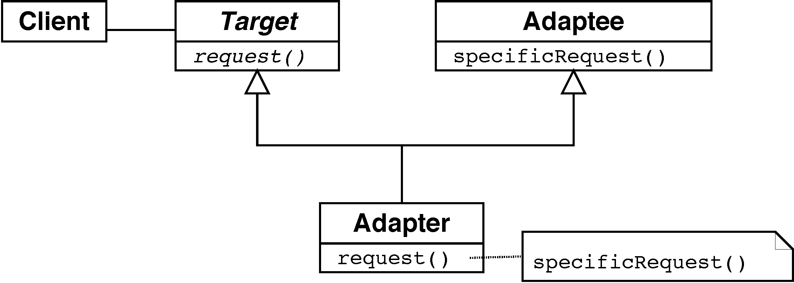
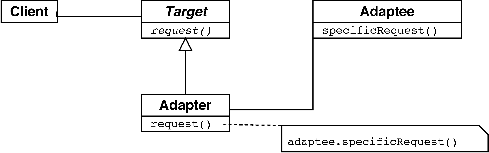

FUNCIONAL¶
Funciones Anónimas¶
Ejemplo: Comparación de personas - versión con herencia¶
Ordenación de una lista de nombres de personas:
List<String> nombres = Arrays.asList("Melchor","Gaspar","Baltasar");
Collections.sort(nombres);
¿Cómo anticipar en la implementación la posible variabilidad del criterio de ordenación?
- Definir una clase para las personas
- Factorizar la función de comparación: delegar en
compareTo(other) - Aprovechamos que el
Stringdel nombre ya implementa la interfazComparable
Delegando hacia las subclases:
class Persona implements Comparable {
private int idPersona;
private String nombre;
private java.util.Date fechaNacimiento;
public Persona() { }
public Persona(int idPersona, String nombre) {
this.idPersona = idPersona;
this.nombre = nombre;
}
public int getIdPersona() { return idPersona; }
public void setIdPersona(int idPersona) { this.idPersona = idPersona; }
public String getNombre() { return nombre; }
public void setNombre(String nombre) { this.nombre = nombre; }
public java.util.Date getFechaNacimiento() { return fechaNacimiento; }
public void setFechaNacimiento(java.util.Date fechaNacimiento) {
this.fechaNacimiento = fechaNacimiento;
}
@Override
public String toString() {
return String.format("ID=%1s, Nombre:%2s", idPersona, nombre);
}
@Override
public int compareTo(Persona otra) {
return nombre.compareTo(otra.getNombre());
}
}
Construir y ordenar una colección de personas:
List<Persona> personas = new ArrayList<Persona>();
personas.add(new Persona(1, "Melchor"));
personas.add(new Persona(2, "Gaspar"));
personas.add(new Persona(3, "Baltasar"));
Collections.sort(personas);
¿Y si deseamos ordenar por fecha?
- Alternativa 1: definir subclases
PersonaPorNombre,PersonaPorFechaNacimiento... - Mucho código repetido (no cumple DRY)
-
Muchos cambios si se añade un nuevo criterio (no cumple OCP)
-
Alternativa 2: No usar herencia, sino composición (no delegar hacia las subclases)
Ejemplo: Comparación de personas - versión con composición¶
Sin usar herencia:
class OrdenarPersonaPorId implements java.util.Comparator<Persona> {
public int compare(Persona o1, Persona o2) {
return o1.getIdPersona() - o2.getIdPersona();
}
}
Collections.sort(personas, new OrdenarPersonaPorId());
- Factorizar la función de comparación
- No delegar hacia las subclases
- Delegar en objeto de otra clase que implemente la interfaz
java.util.Comparator
¿Ventajas?¶
- La función factorizada (v.g. la implementación de
Comparator) es sustituible en tiempo de ejecución mediante inyección de dependencias
Ejemplo: Comparación de personas - versión con clases anónimas¶
Collections.sort(
personas, new java.util.Comparator<Persona>() {
public int compare(Persona o1, Persona o2) {
return o1.getIdPersona() - o2.getIdPersona();
}
}
);
Clases locales¶
- Clases locales: declaradas dentro de métodos
- Las clases locales pueden hacer referencia a identificadores declarados en la clase y a variables de solo lectura (
final) del método en que se declaran
public class EnclosingClass {
public class InnerClass {
public int incrementAndReturnCounter() {
return counter++;
}
}
private int counter;
{
counter = 0;
}
public int getCounter() {
return counter;
}
public static void main(String[] args) {
EnclosingClass enclosingClassInstance = new EnclosingClass();
EnclosingClass.InnerClass innerClassInstance =
enclosingClassInstance.new InnerClass();
for( int i = enclosingClassInstance.getCounter();
(i = innerClassInstance.incrementAndReturnCounter()) < 10; ) {
System.out.println(i);
}
}
}
Predicados en Java 8 y en la biblioteca guava¶
En la biblioteca Guava, los Iterators tienen un método filter que recibe un objeto de tipo Predicate.
Desde Java 8 existe una clase similar Predicate.
Ejemplo: partidos de una competición¶
- Con clases anónimas:
final Predicate<Match> condition = new Predicate<Match>() {
final Team team1 = new Team("Cadiz CF");
final Team team2 = new Team("RC Betis");
public boolean apply(Match match) {
return ( match.getLocalTeam().equals(team1) && match.getVisitingTeam().equals(team2) );
}
};
Iterator matchesByTeam = Iterators.filter(matches, condition);
for (matches: matchesByTeam) { ... };
- Sin clases anónimas:
class FilterByTeam implements Predicate<Match> {
Team localTeam, visitingTeam;
public FilterByTeam(Team t1, Team t2) {
this.localTeam = t1;
this.visitingTeam = t2;
}
public boolean apply(Match match) {
return match.getLocalTeam().equals(t1) || match.getVisitingTeam().equals(t2);
}
}
Comprobar que, en un cierto grupo de la competición, un mismo partido no está repetido ni se enfrenta un equipo contra sí mismo:
private void checkMatchesInGroup(List<Match> matchesInGroup) {
for (Match match: matchesInGroup) {
Team t1 = match.getLocalTeam();
Team t2 = match.getVisitingTeam();
assertNotSame(t1, t2);
List<Match> firstLeg = FluentIterable.from(matchesInGroup)
.filter(new FilterByTeam(t1, t2))
.toImmutableList();
assertTrue(firstLeg.size()==1);
List<Match> secondLeg = FluentIterable.from(matchesInGroup)
.filter(new FilterByTeam(t2, t1))
.toImmutableList();
assertTrue(secondLeg.size()==0);
}
}
Clases anónimas interiores (inner)¶
-
Son clases locales declaradas sin nombre; sirven para clases que solo aparecen una vez en la aplicación
-
Usando Java 7:
class CalculationWindow extends JFrame {
private volatile int result;
public void calculateInSeparateThread(final URI uri) {
new Thread(
new Runnable() {
void run() {
calculate(uri);
result = result + 10;
}
}
).start();
}
}
- Usando Java 8:
class CalculationWindow extends JFrame {
private volatile int result;
public void calculateInSeparateThread(final URI uri) {
// code () -> { /* code */ } is a closure
new Thread(() -> {
calculate(uri);
result = result + 10;
}).start();
}
}
Retrollamadas (callbacks)¶
callback = Fragmento de código ejecutable que se pasa como argumento
Implementaciones en C/C++¶
- Puntero a función:
int (*f)(void) - Con puntero asociado a datos:
void (*f)(void *data) - functor en C++
- clase que define
operator() - es una clase y por tanto pueden contener un estado
Ejemplo de puntero a función¶
/* The calling function takes a single callback as a parameter. */
void PrintTwoNumbers(int (*numberSource)(void)) {
printf("%d and %d\n", numberSource(), numberSource());
}
/* Possible callbacks */
int overNineThousand(void) {
return (rand() % 1000) + 9001;
}
int meaningOfLife(void) {
return 42;
}
int main(void) {
PrintTwoNumbers(&rand);
PrintTwoNumbers(&overNineThousand);
PrintTwoNumbers(&meaningOfLife);
return 0;
}
Ejemplo de puntero a datos¶
/* Type of function used for the callback */
typedef void (*event_cb_t)(const struct event *evt, void *userdata);
/* Define a function to register a callback */
int event_cb_register(event_cb_t cb, void *userdata);
/ * Register the callback */
static void my_event_cb(const struct event *evt, void *data)
{
/* do stuff and things with the event */
}
event_cb_register(my_event_cb, &my_custom_data);
/* struct to store the callback in the event dispatcher */
struct event_cb {
event_cb_t cb;
void *data;
};
/* Execute the callback */
struct event_cb *callback;
...
callback->cb(event, callback->data);
Ejemplo de functor¶
// this is a functor
struct add_x {
add_x(int x) : x(x) {}
int operator()(int y) { return x+y; }
private:
int x;
};
add_x add42(42); // create an instance of the functor class
int i = add42(8); // and "call" it
assert(i == 50); // and it added 42 to its argument
std::vector<int> in; // assume this contains a bunch of values
std::vector<int> out;
// Pass a functor to std::transform, which calls the functor on every element
// in the input sequence, and stores the result to the output sequence
std::transform(in.begin(), in.end(), out.begin(), add_x(1));
assert(out[i] == in[i] + 1); // for all i
Functor vs function pointer¶
//Functor
struct add_x {
add_x(int y):x(y){}
int operator()(int y) { return x+y; }
private:
int x;
};
//Function pointer
int (func)(int x)
{
return ++x;
}
std::vector<int> vec();
//fill vec with 1 2 3 4 5
int (*f)(int) = func; // function pointer initialization
std::transform(vec.begin(),vec.end(),f); // pass function pointer
std::transform(vec.begin(),vec.end(),add_x(1)); // pass functor
Funciones anónimas (lambdas)¶
Función anónima¶
- Función o subrutina definida y (posiblemente) llamada sin necesidad de asociarla a un identificador o nombre
- Se suelen pasar como argumento a funciones de orden superior
- Son funciones anidadas que permiten acceder a variables definidas en el ámbito de la contenedora (variables no locales)
- Muchos lenguajes las introducen a través de la palabra reservada
lambda
Mecanismos de los lenguajes¶
- En C++: funciones anónimas, objetos función (functors) o funciones lambda (desde C++11)
- En Java 8: expresiones lambda
- En Ruby: blocks, procs y lambdas
- En C#: delegates (métodos anónimos y expresiones lambda)
- En Python: generators, comprehensions, lambda expressions
Cierre de funciones (closures)¶
- Cierre: Función o referencia a función junto con un entorno de referencia
- Entorno de referencia: tabla que guarda una referencia a cada una de las variables no locales (libres) de la función
- Variable libre (free): notación lógica matemática que especifica los lugares de una expresión donde tiene lugar una sustitución
- Variable asignada (bound): variable que era libre previamente pero a la que le ha sido asignado un valor o conjunto de valores
- Un cierre permite acceder a las variables libres incluso cuando se invoca desde fuera de su ámbito léxico
Funciones anónimas en C++¶
std::vector<int> some_list; // assume that contains something
int total = 0;
for (int i=0;i<5;++i) some_list.push_back(i);
std::for_each(
begin(some_list),
end(some_list),
[&total](int x) { total += x; }
);
// Computes the total of all elements in the list.
/* Variable total is stored as a part of the lambda function's closure.
Since it is a reference to the stack variable total, it can change
its value. */
Funciones anónimas en Java¶
- Con clases anónimas (Java 7):
public class ComparatorTest {
public static void main(String[] args) {
List<Person> personList = Person.createShortList();
Collections.sort(personList, new Comparator<Person>(){
public int compare(Person p1, Person p2){
return p1.getLastname().compareTo(p2.getLastname());
}
});
System.out.println("=== Sorted Asc Lastname ===");
for(Person p:personList){
p.printName();
}
}
}
- Con lambdas (Java 8)
public class ComparatorTest {
public static void main(String[] args) {
List<Person> personList = Person.createShortList();
// Print Asc
System.out.println("=== Sorted Asc Lastname ===");
Collections.sort(personList, (Person p1, Person p2) ->
p1.getLastname().compareTo(p2.getLastname()));
for(Person p:personList){
p.printName();
}
// Print Desc
System.out.println("=== Sorted Desc Lastname ===");
Collections.sort(personList, (p1, p2) ->
p2.getLastname().compareTo(p1.getLastname()));
for(Person p:personList){
p.printName();
}
}
}
Ejercicio: Mejorando código con expresiones lambda¶
Funciones anónimas en Ruby¶
Bloques (blocks)¶
- Sintaxis
do...end
some_list = [ 10, 20, 30 ]
some_list.map do |i|
i += 1
end
- Sintaxis
{...}
some_list = [ 10, 20, 30 ]
some_list.map { |i| i += 1 }
El método map itera y aplica un bloque repetitivamente a cada elemento de una colección (representado por el parámetro i)
Ejemplo: búsqueda en una lista¶
- Sin bloques:
class SongList
def with_title(title)
for i in 0...@songs.length
return @songs[i] if title == @songs[i].name
end
return nil
end
end
- Con bloques (sintaxis
do...end):
class SongList
def with_title(title)
@songs.find do |song|
title == song.name
end
end
end
- Con bloques (sintaxis
{...}):
class SongList
def with_title(title)
@songs.find { |song| title == song.name }
end
end
El método find itera y aplica el test del bloque a cada elemento song de la colección.
Ejecución de bloques¶
- El bloque debe aparecer al lado de una llamada a método
- No se ejecuta el bloque, sino que se recuerda el contexto (variables locales, objeto actual, etc.) en que aparece
- Cuando se ejecuta el método, el bloque es invocado donde aparezca
yield - El control vuelve al método después del
yield - Al bloque se le pueden pasar parámetros
Ejemplo: fibonacci
def fib_up_to(max)
i1, i2 = 1, 1
while i1 <= max
yield i1
i1, i2 = i2, i1+i2
end
end
fib_up_to(1000) {|f| print f, " " }
#Salida => 1 1 2 3 5 8 13 21 34 55 89 144 233 377 610 987
Ejemplo de yield:
def three_times
yield
yield
yield
end
three_times { puts "Hello" }
Ejemplo: implementación de Array.find
class Array
def find
for i in 0...size
value = self[i]
return value if yield(value)
end
return nil
end
end
Ejemplos: iterar con bloques
- Iterar sobre un array con
each
Array#each: recibe un array y aplica el bloque a cada item, sin modificar el array ni crear un nuevo objeto; devuelve el mismo array.
[ 1, 3, 5, 7, 9 ].each {|i| printf i, " " }
#Salida => 1 3 5 7 9
Array a = [ 1, 2, 3, 4 ]
a.each {|i| puts i*2 }
#Salida => 2 4 6 8
#Devuelve => [1, 2, 3, 4]
a
#Devuelve => [1, 2, 3, 4]
- Iterar sobre un fichero con
each
File#each: recibe el contenido de un fichero de texto y aplica el bloque a cada línea.
f = File.open("testfile")
f.each do |line|
puts line
end
f.close
f = File.open("testfile")
f.each {|line| puts line}
f.close
- Iterar sobre un array con
collect
Array#collect: aplica el bloque a todos los items y devuelve el nuevo array modificado; hace lo mismo que Array#map
["H", "A", "L"].collect {|x| x.succ }
# Salida => [''I'', ''B'', ''M'']
Array a = [ 1, 2, 3, 4 ]
a.collect {|i| puts i*2}
#Salida => 2 4 6 8
#Devuelve => [nil, nil, nil, nil]
a.collect {|i| i.succ}
#Devuelve => [2, 3, 4, 5]
a
#Devuelve => [1, 2, 3, 4]
Procs y lambdas¶
- En Ruby, una función anónima o lambda es simplemente un tipo especial de objeto
Proc - Definición de procs/lambdas:
# sin argumentos:
say_something = -> { puts "This is a lambda" }
say_something = lambda { puts "This is a lambda" }
say_otherwise = Proc.new { puts "This is a proc" }
# con argumentos:
times_two = ->(x) { x * 2 }
- Varias formas de llamar a la lambda (es preferible
call)
say_something = -> { puts "This is a lambda" }
say_something.call
say_something.()
say_something[]
say_otherwise = Proc.new { puts "This is a proc" }
say_otherwise.call
times_two = ->(x) { x * 2 }
times_two.call(10)
- Los
procno se preocupan de los argumentos:
t = Proc.new { |x,y| puts "I don't care about args!" }
t.call #Salida: I don't care about args!
t.call(10) #Salida: I don't care about args!
t.call(10,10) #Salida: I don't care about args!
t.call(10,10) #Salida: I don't care about args!
s = ->(x,y) { puts "I care about args" }
s.call # ArgumentError: wrong number of arguments (given 0, expected 2)
s.call(10) # ArgumentError: wrong number of arguments (given 1, expected 2)
s.call(10,10) # Salida: I care about args
- Los
procretornan del método actual; los lambda retornan de la función anónima:
# funciona:
my_lambda = -> { return 1 }
puts "Lambda result: #{my_lambda.call}"
# eleva una exceción:
my_proc = Proc.new { return 1 }
puts "Proc result: #{my_proc.call}"
- Si el
procestá dentro de un método, la llamada areturnes equivalente a retornar de ese método:
def call_proc
puts "Before proc"
my_proc = Proc.new { return 2 }
my_proc.call
puts "After proc"
end
puts call_proc
# Prints "Before proc" but not "After proc"
def call_lambda
puts "Before lambda"
my_lambda = lambda { return 2 }
my_lambda.call
puts "After lambda"
end
puts call_lambda
# Prints "Before lambda" and "After lambda"
Diferencias entre Proc y lambda:¶
- Las lambdas se definen con
-> {}y los procs conProc.new {} - Los
Procretornan del método actual, las lambdas retornan de la propia función lambda - Los
Procno se preocupan del número correcto de argumentos, las lambdas elevan una excepción
Paso de bloques como parámetros¶
- Simplemente, se añade al final de la llamada a un método
- ¿Dónde se llama al bloque? Donde el método indique con
yield - El bloque (realmente un objeto
Proc) se pasa como una especie de parámetro no declarado
Ejemplos de paso de bloques:¶
- Llamada a un bloque sin parámetros
def run_it
puts("Before the yield")
yield
puts("After the yield")
end
run_it do
puts('Hello')
puts('Coming to you from inside the block')
end
# Salida =>
# Before the yield
# Hello
# Coming to you from inside the block
# After the yield
- Cualquier método puede recibir un bloque como parámetro implícito, pero no lo ejecuta si no hace
yield:
def run_it
end
run_it do
puts('Hello')
end
# => No genera salida
- Con
yield:
def run_it
yield if block_given?
end
run_it do
puts('Hello')
end
# Salida =>
# Hello
- Llamada a un bloque con parámetros:
def run_it_with_parameter
puts('Before the yield')
yield(24)
puts('After the yield')
end
run_it_with_parameter do |x|
puts('Hello from inside the proc')
puts("The value of x is #{x}")
end
# Salida =>
# Before the yield
# Hello from inside the proc
# The value of x is 24
# After the yield
- Hacer explícito el bloque pasado como parámetro usando ampersand: explicitamos que se espera que el método reciba un parámetro de tipo bloque
def run_it_with_parameter(&block)
puts('Before the call')
block.call(24)
puts('After the call')
end
- Convertir un
Proco un lambda en un bloque pasado como parámetro:
my_proc = Proc.new {|x| puts("The value of x is #{x}")}
run_it_with_parameter(&my_proc)
my_lambda = lambda {|x| puts("The value of x is #{x}")}
run_it_with_parameter(&my_lambda)
# Salida (en ambos casos) =>
# Before the call
# The value of x is 24
# After the call
Lecturas recomendadas¶
- M. Williams: Java SE 8: Lambda Quick Start, Oracle Learning Library, 2013.
- D. Thomas & A. Hunt: Programming Ruby. The Pragmatic Programmer's Guide, Addison-Wesley, 2005.
Ejemplos de diseño e implementación¶
Interfaces funcionales - Ejemplo: Formateo de informes¶
Versión en ruby¶
class Report
attr_reader :title, :text
attr_accessor :formatter
def initialize(formatter)
@title = 'Informe mensual'
@text = ['Todo marcha', 'muy bien.']
@formatter = formatter
end
def output_report()
@formatter.output_report(self)
end
end
class HTMLFormatter
def output_report(context)
puts('<html>')
puts(' <head>')
# Output The rest of the report ...
puts(" <title>#{context.title}</title>")
puts(' </head>')
puts(' <body>')
context.text.each do |line|
puts(" <p>#{line}</p>")
end
puts(' </body>')
puts('</html>')
end
end
class PlainTextFormatter
def output_report(context)
puts("***** #{context.title} *****")
context.text.each do |line|
Versión con interfaces funcionales (Ruby procs + blocks)¶
class Report
attr_reader :title, :text
attr_accessor :formatter
def initialize(&formatter)
@title = 'Monthly Report'
@text = [ 'Things are going', 'really, really well.' ]
@formatter = formatter
end
def output_report
@formatter.call( self )
end
end
Formateo HTML¶
HTML_FORMATTER = lambda do |context|
puts('<html>')
puts(' <head>')
puts(" <title>#{context.title}</title>")
puts(' </head>')
puts(' <body>')
context.text.each do |line|
puts(" <p>#{line}</p>" )
end
puts(' </body>')
puts
report = Report.new &HTML_FORMATTER
report.output_report
Formateo de texto¶
report = Report.new do |context|
puts("***** #{context.title} *****")
context.text.each do |line|
puts(line)
end
end
Cambio de interfaz - Adaptadores¶
Tipos de adaptador¶
Adaptadores de clase¶

Adaptadores de objeto¶

Implementaciones¶
- Herencia
- Composición
- Herencia múltiple
- Mixins
Mixins¶
En POO, un mixin es una clase con métodos disponibles para otras clases sin tener que ser madre de estas otras (es decir, sin usar la herencia)
- Es una alternativa a la herencia múltiple
- Es una interfaz con métodos ya implementados
- No se heredan sino que se incluyen
- Es una forma de implementar el principio de inversión de dependencias (DIP)
Ruby modules¶
En Ruby los mixins se implementan mediante módulos (module).
- Un módulo no puede tener instancias (porque no es una clase)
- Un módulo puede incluirse (
include) dentro de la definición de una clase
Ejemplo: herencia vs mixins¶
module Debug
def whoAmI?
"#{self.class.name} (\##{self.object_id}): #{self.to_s}"
end
end
class MusicWork
def initialize(title)
@title=title
end
def to_s
@title
end
end
class Phonograph < MusicWork
include Debug
end
class EightTrack < MusicWork
include Debug
end
ph = Phonograph.new("West End Blues")
et = EightTrack.new("Surrealistic Pillow")
ph.whoAmI? # => "Phonograph (#70315984363660): West End Blues"
et.whoAmI? # => "EightTrack (#70315996611260): Surrealistic Pillow"
Ejemplo: Comparable en ruby¶
Una manera de implementar un Comparable en ruby mediante el módulo Comparable:
class Student
include Comparable # The class Student 'inherits' Comparable module using include keyword
attr_accessor :name, :score
def initialize(name, score)
@name = name
@score = score
end
# Including the Comparison module, requires the implementing class to define the <=> comparison operator
# Here's the comparison operator. We compare 2 student instances based on their scores.
def <=>(other)
@score <=> other.score
end
# Here's the good bit - I get access to <, <=, >,>= and other methods of the Comparable Interface for free.
end
s1 = Student.new("Peter", 100)
s2 = Student.new("Jason", 90)
s3 = Student.new("Maria", 95)
s1 > s2 #true
s1 <= s2 #false
s3.between?(s1,s2) #true
- La clase que incluye el módulo
Comparabletiene que implementar: - el método
<=>: es un método que incluye los siguientes operadores/métodos:<, <=, ==, >, >=, between? - el atributo-criterio de comparación
- En
x <=> y,xes el receptor del mensaje/método eyes el argumento
Ejemplo: Adaptador de interfaz en Ruby¶
Interfaz americana¶
class Renderer
def render(text_object)
text = text_object.text
size = text_object.size_inches
color = text_object.color
# render the text ...
end
end
class TextObject
attr_reader :text, :size_inches, :color
def initialize(text, size_inches, color)
@text = text
@size_inches = size_inches
@color = color
end
end
Interfaz británica¶
## british_text_object.rb
class BritishTextObject
attr_reader :string, :size_mm, :colour
# ...
end
Adaptador de interfaz: versión clásica¶
class BritishTextObjectAdapter < TextObject
def initialize(bto)
@bto = bto
end
def text
return @bto.string
end
def size_inches
return @bto.size_mm / 25.4
end
def color
return @bto.colour
end
end
Adaptador de interfaz: versión con módulos¶
## Make sure the original class is loaded
require 'british_text_object'
## Now add some methods to the original class
class BritishTextObject
def color
return colour
end
def text
return string
end
def size_inches
return size_mm / 25.4
end
end
requirecarga la clase original- la reescritura de métodos modifica la clase, no la declara de nuevo
- se puede hacer incluso con las clases built-in de la biblioteca de Ruby
Adaptador de interfaz: instancia única¶
bto = BritishTextObject.new('hello', 50.8, :blue)
class << bto
def color
colour
end
def text
string
end
def size_inches
return size_mm/25.4
end
end
def bto.color
colour
end
def bto.text
string
end
## ...
- Modifica el comportamiento solo de 1 instancia
- Ruby llama a esto singleton methods y singleton class (no es exactamente lo mismo que el patrón singleton del GoF)
- Ruby primero busca los métodos definidos en una clase singleton y luego en la clase regular que ha sido redefinida
Scala Traits¶
Los traitde Scala son similares a las interfaces de Java.
- Las clases y los objetos pueden extender un
trait - Los
traitno pueden instanciarse
Ejemplo: Iterador como un trait¶
trait Iterator[A] {
def hasNext: Boolean
def next(): A
}
class IntIterator(to: Int) extends Iterator[Int] {
private var current = 0
override def hasNext: Boolean = current < to
override def next(): Int = {
if (hasNext) {
val t = current
current += 1
t
} else 0
}
}
val iterator = new IntIterator(10)
println(iterator.next()) // prints 0
println(iterator.next()) // prints 1
Ejemplo: Subtipos¶
Implementación del polimorfismo de inclusión o herencia simple con traits:
import scala.collection.mutable.ArrayBuffer
trait Pet {
val name: String
}
class Cat(val name: String) extends Pet
class Dog(val name: String) extends Pet
val dog = new Dog("Harry")
val cat = new Cat("Sally")
val animals = ArrayBuffer.empty[Pet]
animals.append(dog)
animals.append(cat)
animals.foreach(pet => println(pet.name)) // Prints Harry Sally
Ejemplo: Similarity¶
trait Similarity {
def isSimilar(x: Any): Boolean
def isNotSimilar(x: Any): Boolean = !isSimilar(x)
}
class Point(xc: Int, yc: Int) extends Similarity {
var x: Int = xc
var y: Int = yc
def isSimilar(obj: Any) =
obj.isInstanceOf[Point] &&
obj.asInstanceOf[Point].x == x
}
object TraitsTest extends App {
val p1 = new Point(2, 3)
val p2 = new Point(2, 4)
val p3 = new Point(3, 3)
println(p1.isNotSimilar(p2)) //false
println(p1.isNotSimilar(p3)) //true
println(p1.isNotSimilar(2)) //true
}
- El polimorfismo (de inclusión) usa la herencia (simple)
- Los mixin son un mecanismo de reutilización de código sin herencia
¿Usar traits con comportamiento va contra el principio general de que la herencia de comportamiento es una mala idea?
- Odersky llama mixin traits a los traits con comportamiento
- Para ser un mixin genuino, debería mezclar comportamiento y no interfaces heredadas
- Leer Scala Mixins: The right way
Ejemplo: Iterator¶
Cómo reutilizar comportamiento de varios tipos de iteradores a través de un mixin:
abstract class AbsIterator {
type T
def hasNext: Boolean
def next: T
}
trait RichIterator extends AbsIterator {
def foreach(f: T => Unit) { while (hasNext) f(next) }
}
class IntIterator(to: Int) extends AbsIterator {
type T = Int
private var n = 0
def hasNext = n < to
def next = { val t = n; n += 1; t }
}
class StringIterator(s: String) extends AbsIterator {
type T = Char
private var i = 0
def hasNext = i < s.length()
def next = { val ch = s charAt i; i += 1; ch }
}
object StringIteratorTest {
class Iter extends StringIterator("HOLA") with RichIterator
val iter = new Iter
iter foreach println
}
object IntIteratorTest {
class Iter extends IntIterator(10) with RichIterator
val iter = new Iter
iter foreach println
}
- Unit en scala: subtipo de
AnyVal; solo hay un valor()que es de tipoUnit. - Un método que devuelve
Unites análogo a un método Java que devuelvevoid
Diferencia con clase abstracta¶
- Scala traits vs abstract classes
- Los constructores de un
traitno pueden tener parámetros (de momento)
Reglas¶
- Si no se va a reutilizar el comportamiento => clase concreta
- Si se va a reutilizar en varias clases no relacionadas entre sí => trait (mixin)
- Si hace falta heredarlo en código Java => clase abstracta
- Si se va a distribuir compilado y se va a heredar => clase abstracta
- Si importa mucho la eficiencia => clase (los traits se compilan a interfaces y son algo más lentas de llamar)
- Si no se sabe => empezar por un trait y cambiarlo cuando se sepa
Ejercicios y lecturas recomendadas¶
- Tutorial: Ruby modules
- Scala traits
- Ejemplo: Traits exercise
- Ejemplo: Stackable Traits pattern
- Lectura: Herencia vs. composición con Scala mixins